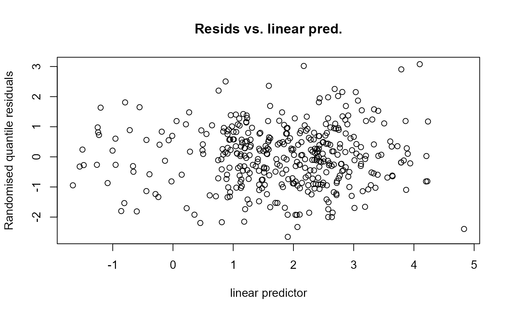

Reproduces the "Resids vs. linear pred" plot from
gam.check but using randomised quantile residuals, a la
Dunn and Smyth (1996). Checks for heteroskedasticity as as usual, looking
for "funnel"-type structures in the points, which is much easier with
randomised quantile residuals than with deviance residuals, when your model
uses a count distribution as the response.
Details
Note that this function only works with negative binomial and Tweedie response distributions.
Earlier versions of this function produced the full
gam.check output, but this was confusing as only one of
the plots was really useful. Checks of k are not computed, these need to
be done using gam.check.
Examples
# \donttest{
library(Distance)
library(dsm)
library(tweedie)
# load the Gulf of Mexico dolphin data (see ?mexdolphins)
data(mexdolphins)
# fit a detection function and look at the summary
hr.model <- ds(distdata, truncation=6000,
key = "hr", adjustment = NULL)
#> Fitting hazard-rate key function
#> AIC= 677.433
#> No survey area information supplied, only estimating detection function.
# fit a simple smooth of x and y with a Tweedie response with estimated
# p parameter
mod1 <- dsm(count~s(x, y), hr.model, segdata, obsdata, family=tw())
#> Warning: Some observations are outside of detection function 1 truncation!
rqgam_check(mod1)

# }